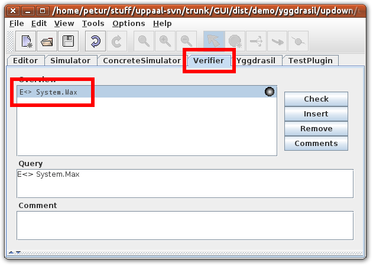
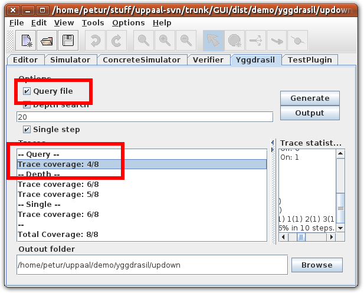
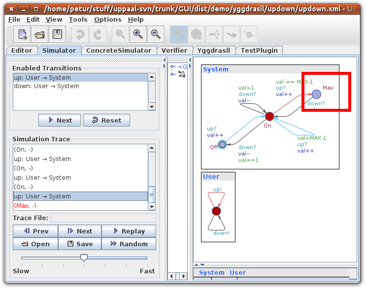

This tutorial assumes you have understood part two.
For comments or questions please contact Petur Olsen at petur@cs.aau.dk or Marius Mikucionis marius@cs.aau.dk.
Open the updown.xml file in Uppaal.
This tutorial uses the same model as part two.
Sometimes it is desirable to generate test cases for specific purposes. This can be done by creating a verification query for the purpose, and using it to generate a test case.
In the Verifier tab you can enter queries.
Test Case generator searches for all reachability queries (that is queries which start with 'E<>').

The query enterer should be E<> System.Max, which asks the verifier to find a trace where the System process is in the location Max.
To generate test cases go to the Test Cases tab and activate the Query file option, and hit Generate.

This should generate a trace from the query file. You can double click the trace and go to the Simulator tab and verify that this trace does indeed lead to the Max location.

This is the end of the tutorial series.
Please send any questions or comments to Petur Olsen at petur@cs.aau.dk.